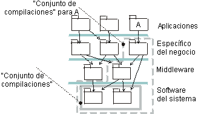

|
En los sistemas grandes en los que puede tener hasta cien subsistemas de implementación, planificar la integración es
una tarea compleja.
Para facilitar la planificación de la integración y gestionar la complejidad, debe reducir el número de elementos a
tener en cuenta. Se recomienda definir conjuntos significativos de subsistemas (conjuntos de compilación o
torres) que conforman una unidad desde el punto de vista de la integración. ' Conforman una unidad' en el
sentido de que estos subsistemas se integran a menudo como un grupo; no tiene sentido integrar sólo uno de estos
subsistemas. Por ejemplo, todos los subsistemas de las capas inferiores que un subsistema necesita ejecutar (que
importa directa o indirectamente), pueden conformar un conjunto de compilación significativo.

Se define un conjunto de compilación para la capa inferior si estos dos subsistemas se integran a menudo como un grupo.
Se define un conjunto de compilación con todos los subsistemas que se necesitan para compilar y ejecutar el subsistema
A.
Observe que los conjuntos de compilación pueden solaparse y de hecho lo harán. Los conjuntos de compilación y su
contenido variarán durante el ciclo vital de un proyecto.
El objetivo de definir estos conjuntos de compilación es facilitar la planificación de la integración. En lugar de
pensar en subsistemas individuales, puede pensar en conjuntos de subsistemas.
|